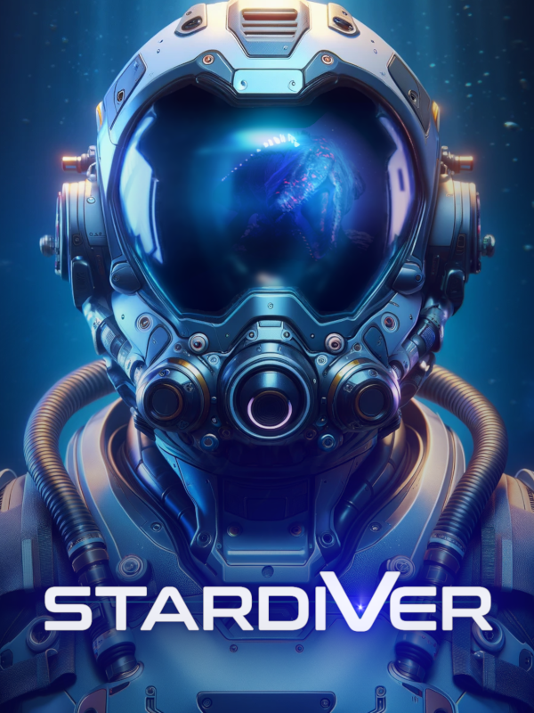

Stardiver
Stardiver
Details
|  | |
| Playtime | 1h 51m 0s |
| Last Activity | 2024-09-17 23:40:12 |
| Added | 2024-09-17 23:52:44 |
| Modified | 2025-10-02 9:51:02 |
| Completion Status | Abandoned |
| Library | Steam |
| Source | Steam |
| Platform | PC (Windows) |
| Release Date | 2024-09-12 |
| Community Score | |
| Critic Score | |
| User Score | |
| Genre | Adventure Indie Shooter Simulator |
| Developer | Green Planet Games |
| Publisher | Green Planet Games |
| Feature | Single Player |
| Links | Steam Official Website Twitch YouTube Discord |
| Tag | 3D Action-Adventure Adventure Atmospheric Driving Dystopian Exploration Futuristic Indie Investigation Mystery Narration Philosophical Realistic Relaxing Sci-fi Singleplayer Space Story Rich Underwater |
Description
Prepare for a sci-fi adventure in a stunning underwater environment with an atmospheric soundtrack. Become a pilot, explorer, and judge responsible for the planet's fate.
Zera, your ship's AI, is the narrator of the story and guides you through 20 missions in order to reveal the secret of the forgotten planet. Experience a journey that touches both the good and evil sides of modern, relevant topics such as AI and climate change. Cruise through a free-roaming, beautiful world, but also be aware of the dangerous wildlife of the planet and gigantic strange creatures mutated due to mysterious environmental changes.

Your Mission
You have been in cryosleep for 387 days. The current year is 3076. Your mission is to investigate the disappearance of a research AI ship. Shortly after arriving on the planet, an unknown hostile force stands in your way. You unravel its identity piece by piece while trying to make your way back home.
Game Genre and Features
This indie game has mostly slow-paced, story-driven gameplay with additional enriching features from various game genres that help you dive deeper and immerse into its world, such as:
- [action] shooting space-like combat with wildlife, AI ships, and 5 bosses;
- [crafting and exploration] upgrading your ship at the base with resources mined and found in the game world.
Game features:
stunning underwater world
sci-fi story with relevant topics such as AI and climate change
free-roaming environment
both 3rd person and cockpit view
1st person swimming outside the ship
activities from varius game genres: shooting, upgrading the ship, crafting, mining resources, gathering useful items, collecting clues about the planet, boss battles
20 missions
30 km2 world with beautiful, atmospheric, color-based areas
over 800 lines of dialogue
77 objects to collect and read about
35 achievements to unlock
screenshot mode